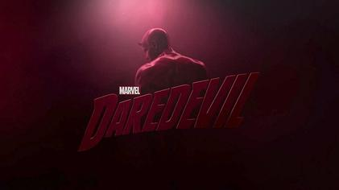

Everything And Nothing
Jun 2026
There are books like The Illusion of Life, Color and Light, and Sculpting for Artists. They are more than just books. They are the lifetimes of masters, compressed into a few hundred pages. Decades of observation, failure, discovery, and refinement, all passed on to anyone willing to learn.
Yet someone like Daredevil could never experience much of what these books were created to teach. The colors, the lighting, the visual rhythms, the subtle forms. An entire universe of knowledge exists, but it remains inaccessible to him.
Does that make these books worthless?
No.
It means their value exists as potential. That potential only becomes real when it meets someone who can experience it.
The same is true of almost everything in life. A symphony is silent to someone who cannot hear. A painting is invisible to someone who cannot see. A perfume means nothing to someone without a sense of smell. The object itself remains the same, but its meaning is born in the relationship between the world and the person experiencing it.
Perhaps that is one of the most beautiful truths about life.
Nothing possesses absolute value on its own. Value is something we bring into existence through our ability to experience, understand, and care. The world is filled with endless possibilities, but each of us can only unlock a small part of them.
So everything is, in a way, worth nothing and everything at the same time.
The universe offers possibilities. We choose, consciously or unconsciously, which of those possibilities become meaningful. And in that choice lies one of the greatest beauties of being alive.